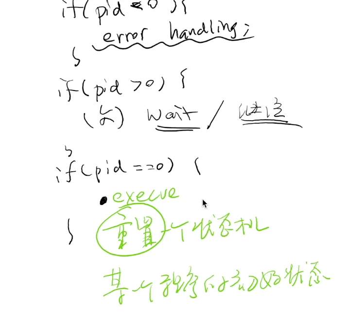

操作系统上的进程
Overview
复习
- 操作系统内核的启动：CPU Reset → Firmware → Boot loader → Kernel _start() → ...
本次课回答的问题
- Q1: 操作系统启动后到底做了什么？
- Q2: 操作系统如何管理程序 (进程)？
本次课主要内容
- 虚拟化：操作系统上的进程
- 进程管理 API
一、操作系统启动后到底做了什么？
1、从系统启动到第一个进程
回顾 thread-os.c 的加载过程
- CPU Reset → Firmware → Boot loader → Kernel
_start()
操作系统会加载 “第一个程序”
- RTFSC (latest Linux Kernel)
- 如果没有指定启动选项
init=，按照 “默认列表” 尝试一遍 - 从此以后，Linux Kernel 就进入后台，成为 “中断/异常处理程序”
程序：状态机
- C 代码视角：语句
- 汇编/机器代码视角：指令
- 与操作系统交互的方式：syscall
2、定制最小的 Linux
没有存储设备，只有包含两个文件的 “initramfs”
$ tree .
.
├── initramfs
│ ├── bin
│ │ └── busybox (可以在我们的Linux里直接执行)
│ └── init
├── Makefile
└── vmlinuz
$ make
.
├── build
│ └── initramfs.cpio.gz (生成个镜像)
├── initramfs
│ ├── bin
│ │ └── busybox
│ └── init
├── Makefile
└── vmlinuz
$ make run
加上 vmlinuz (内核镜像) 就可以在 QEMU 里启动了
可以直接在文件系统中添加静态链接的二进制文件
3、变魔术时间到
BusyBox: The Swiss Army Knife of embedded Linux

c1="arch ash base64 cat chattr chgrp chmod chown conspy cp cpio cttyhack date dd df dmesg dnsdomainname dumpkmap echo ed egrep false fatattr fdflush fgrep fsync getopt grep gunzip gzip hostname hush ionice iostat ipcalc kbd_mode kill link linux32 linux64 ln login ls lsattr lzop makemime mkdir mknod mktemp more mount mountpoint mpstat mt mv netstat nice nuke pidof ping ping6 pipe_progress printenv ps pwd reformime resume rev rm rmdir rpm run-parts scriptreplay sed setarch setpriv setserial sh sleep stat stty su sync tar touch true umount uname usleep vi watch zcat"
c2="[ [[ awk basename bc beep blkdiscard bunzip2 bzcat bzip2 cal chpst chrt chvt cksum clear cmp comm crontab cryptpw cut dc deallocvt diff dirname dos2unix dpkg dpkg-deb du dumpleases eject env envdir envuidgid expand expr factor fallocate fgconsole find flock fold free ftpget ftpput fuser groups hd head hexdump hexedit hostid id install ipcrm ipcs killall last less logger logname lpq lpr lsof lspci lsscsi lsusb lzcat lzma man md5sum mesg microcom mkfifo mkpasswd nc nl nmeter nohup nproc nsenter nslookup od openvt passwd paste patch pgrep pkill pmap printf pscan"
c3="pstree pwdx readlink realpath renice reset resize rpm2cpio runsv runsvdir rx script seq setfattr setkeycodes setsid setuidgid sha1sum sha256sum sha3sum sha512sum showkey shred shuf smemcap softlimit sort split ssl_client strings sum sv svc svok tac tail taskset tcpsvd tee telnet test tftp time timeout top tr traceroute traceroute6 truncate ts tty ttysize udhcpc6 udpsvd unexpand uniq unix2dos unlink unlzma unshare unxz unzip uptime users uudecode uuencode vlock volname w wall wc wget which who whoami whois xargs xxd xz xzcat yes"
for cmd in $c1 $c2 $c3; do
/bin/busybox ln -s /bin/busybox /bin/$cmd
done
mkdir -p /proc && mount -t proc none /proc
mkdir -p /sys && mount -t sysfs none /sys
export PS1='(linux) '
- 试试 adb shell (toybox)
4、例子：NOILinux-lite
2021 年，CCF 以迅雷不及掩耳盗铃之势发布了 NOILinux 2.0
- Ubuntu 20.04 Desktop (x86-64 only)
- 真就不管那些 32-bit 的老爷机和老爷系统的死活了？
和刚才的 “最小” 系统但本质一样
- 有更多设备 (磁盘、网卡等)
- initramfs 里挂载了磁盘
- 磁盘里安装了最少的编译运行环境 (g++, ...) 和一个 Web 服务
switch_root(pivot_root系统调用) 完成 “启动”

5、小结：应用程序视角的操作系统
Linux 操作系统启动流程
- CPU Reset → Firmware → Loader → Kernel
_start()→ 第一个程序/bin/init→ 程序 (状态机) 执行 + 系统调用
操作系统为 (所有) 程序提供 API
也就是说，syscall有三类：进程、内存、文件....，就可以造出操作系统
- 进程 (状态机) 管理
- fork, execve, exit - 状态机的创建/改变/删除 ← 今天的主题
- 存储 (地址空间) 管理
- mmap - 虚拟地址空间管理
- 文件 (数据对象) 管理
- open, close, read, write - 文件访问管理
- mkdir, link, unlink - 目录管理
二、fork()
1、操作系统：状态机的管理者
C 程序 = 状态机
- 初始状态：
main(argc, argv) - 程序可以直接在处理器上执行
虚拟化：操作系统在物理内存中保存多个状态机
- 通过虚拟内存实现每次 “拿出来一个执行”
- 中断后进入操作系统代码，“换一个执行”
2、状态机管理：创建状态机
如果要创建状态机，我们应该提供什么样的 API？
UNIX 的答案: fork
- 做一份状态机完整的复制 (内存、寄存器现场)
int fork();
- 立即复制状态机 (完整的内存)
- 执行 fork 的进程返回子进程的进程号
- 新创建进程内其实还会执行个fork()，返回 0
3、Fork Bomb
模拟状态机需要资源
- 只要不停地创建进程，系统还是会挂掉的
- Don't try it (or try it in docker)
- 你们交这个到 Online Judge 是不会挂的
4、代码解析: Fork Bomb
命令行执行
5、这次你们记住 Fork 了！
因为状态机是复制的，因此总能找到 “父子关系”
- 因此有了进程树 (pstree)
systemd-+-accounts-daemon---2*[{accounts-daemon}]
|-agetty
|-atd
|-automount---2*[{automount}]
|-avahi-daemon---avahi-daemon
|-cron
|-dbus-daemon
|-irqbalance---{irqbalance}
|-lxcfs---7*[{lxcfs}]
...
6、理解 fork: 习题 (1)
试着拿出一张纸，写出以下程序的输出结果
- fork-demo.c
- 你心里可能立即想，运行一下不就完了吗？
- 记得用 “状态机” 去理解它
#include <unistd.h>
#include <stdio.h>
int main() {
pid_t pid1 = fork();
pid_t pid2 = fork();
pid_t pid3 = fork();
printf("Hello World from (%d, %d, %d)\n", pid1, pid2, pid3);
}
运行下（每次的结果不同）
$ gcc a.c && ./a.out
Hello World from (31308, 31309, 31310)
Hello World from (31308, 31309, 0)
Hello World from (31308, 0, 31312)
Hello World from (31308, 0, 0)
Hello World from (0, 31311, 31313)
Hello World from (0, 31311, 0)
Hello World from (0, 0, 31314)
Hello World from (0, 0, 0)
7、理解 fork: 习题 (2)
问以下程序的输出结果
- 一个更好的版本: fork-printf.c
- 用状态机的视角再试一次
- 试一试：
./a.outv.s../a.out | cat
#include <stdio.h>
#include <unistd.h>
#include <sys/wait.h>
int main(int argc, char *argv[]) {
int n = 2;
for (int i = 0; i < n; i++) {
fork();
printf("Hello\n");
}
for (int i = 0; i < n; i++) {
wait(NULL);
}
}
计算机系统里没有魔法。机器永远是对的。
fork 就是一个无情的拷贝状态的机器，把内存和寄存器复制一遍
在复制的时候，库函数的内部状态也复制一份，如缓冲区
8、理解 fork: 习题 (3)
多线程程序的某个线程执行 fork()，应该发生什么？
- 这是个很有趣的问题：创造 fork 时创始人并没有考虑线程
我们可能作出以下设计：
- 仅有执行 fork 的线程被复制，其他线程 “卡死”
- 仅有执行 fork 的线程被复制，其他线程退出
- 所有的线程都被复制并继续执行
- 这三种设计分别会带来什么问题？
三、execve()
1、状态机管理：替换状态机
光有 fork 还不够，怎么 “执行别的程序”？
UNIX 的答案: execve
- 将当前运行的状态机重置成成另一个程序的初始状态

- 执行名为
filename的程序 - 允许对新状态机设置参数 argv(v) 和环境变量envp(e)
- 刚好对应了
main()的参数！ - execve-demo.c
#include <unistd.h>
#include <stdio.h>
// int main(int argc, char *argv[], char *envp[])
// argc 表示程序传入参数的个数
// argv 表示传入参数的指针，argv[0]表示程序本身
// envp 表示程序的运行环境
int main() {
char * const argv[] = {
"/bin/bash", "-c", "env", NULL,
};
char * const envp[] = {
"HELLO=WORLD", NULL,
};
execve(argv[0], argv, envp);
printf("Hello, World!\n");
}
执行一下，execve 把"/bin/bash"程序的状态机重置了，还是同一个进程号，所有的资源都在
printf("Hello, World!\n"); 没有被执行，因为 execve 将程序重置了
$ strace -f ./a.out |& vim -
execve("./a.out", ["./a.out"], 0x7ffcbecdd708 /* 28 vars */) = 0
brk(NULL) = 0xcba000
brk(0xcbb1c0) = 0xcbb1c0
arch_prctl(ARCH_SET_FS, 0xcba880) = 0
uname({sysname="Linux", nodename="dev-hici-10-29-45-50", ...}) = 0
readlink("/proc/self/exe", "/home/z00561505/demo/a.out", 4096) = 26
brk(0xcdc1c0) = 0xcdc1c0
brk(0xcdd000) = 0xcdd000
access("/etc/ld.so.nohwcap", F_OK) = -1 ENOENT (No such file or directory)
execve("/bin/bash", ["/bin/bash", "-c", "env"], 0x7ffc8bde74a0 /* 1 var */) = 0
brk(NULL) = 0x55ef0ea01000
access("/etc/ld.so.nohwcap", F_OK) = -1 ENOENT (No such file or directory)
access("/etc/ld.so.preload", R_OK) = -1 ENOENT (No such file or directory)
在linux中，所有的程序都是通过 fork() 创建，所有新程序的启动都需要状态机的reset 就是 execve()
2、环境变量
“应用程序执行的环境”
- 使用
env命令查看 PATH: 可执行文件搜索路径PWD: 当前路径HOME: home 目录DISPLAY: 图形输出PS1: shell 的提示符export: 告诉 shell 在创建子进程时设置环境变量- 小技巧：
export ARCH=x86_64-qemu或export ARCH=native - 上学期的
AM_HOME终于破案了
3、环境变量：PATH
可执行文件搜索路径
- 还记得 gcc 的 strace 结果吗？
execve 不断的再找gcc ，找不到的 -1，直到 execve("/usr/bin/as", ["as", "--64"
[pid 10004] execve("/usr/lib/gcc/x86_64-linux-gnu/7/cc1", ["/usr/lib/gcc/x86_64-linux-gnu/7/"..., "-quiet", "-imultiarch", "x86_64-linux-gnu", "a.c", "-quiet", "-dumpbase", "a.c", "-mtune=generic", "-march=x86-64", "-auxbase", "a"[pid 10004] <... execve resumed> ) = 0
[pid 10005] execve("/root/bin/as", ["as", "--64", "-o", "/tmp/ccRF6miU.o", "/tmp/cckh7fxV.s"], 0xd770e0 /* 33 vars */) = -1 ENOENT (No such file or directory)
[pid 10005] execve("/usr/local/sbin/as", ["as", "--64", "-o", "/tmp/ccRF6miU.o", "/tmp/cckh7fxV.s"], 0xd770e0 /* 33 vars */) = -1 ENOENT (No such file or directory)
[pid 10005] execve("/usr/local/bin/as", ["as", "--64", "-o", "/tmp/ccRF6miU.o", "/tmp/cckh7fxV.s"], 0xd770e0 /* 33 vars */) = -1 ENOENT (No such file or directory)
[pid 10005] execve("/usr/sbin/as", ["as", "--64", "-o", "/tmp/ccRF6miU.o", "/tmp/cckh7fxV.s"], 0xd770e0 /* 33 vars */) = -1 ENOENT (No such file or directory)
[pid 10005] execve("/usr/bin/as", ["as", "--64", "-o", "/tmp/ccRF6miU.o", "/tmp/cckh7fxV.s"], 0xd770e0 /* 33 vars */ <unfinished ...>
- 这个搜索顺序恰好是
PATH里指定的顺序
$ PATH="" /usr/bin/gcc a.c
gcc: error trying to exec 'as': execvp: No such file or directory
$ PATH="/usr/bin/" gcc a.c
$ PATH=x:y:z /usr/bin/strace -f /bin/gcc a.c
计算机系统里没有魔法。机器永远是对的。
四、_exit()
1、状态机管理：终止状态机
有了 fork, execve 我们就能自由执行任何程序了，最后只缺一个销毁状态机的函数！
UNIX 的答案: _exit
- 立即摧毁状态机
- 销毁当前状态机，并允许有一个返回值
- 子进程终止会通知父进程 (后续课程解释)
这个简单……
- 但问题来了：多线程程序怎么办？
2、结束程序执行的三种方法
exit 的几种写法 (它们是不同)
exit(0)- stdlib.h中声明的 libc 函数- 会调用
atexit， _exit(0)- glibc的 syscall wrapper- 执行
exit_group系统调用终止整个进程 (所有线程)- 细心的同学已经在 strace 中发现了
- 不会调用
atexit syscall(SYS_exit, 0)- 执行 “
exit” 系统调用终止当前线程 - 不会调用
atexit
3、不妨试一试
结束当前进程执行的四种方式
return,exit,_exit,syscall- exit-demo.c
- 用 strace 观察程序的执行
#include <stdlib.h>
#include <stdio.h>
#include <string.h>
#include <unistd.h>
#include <time.h>
#include <sys/syscall.h>
void func() {
printf("Goodbye, Cruel OS World!\n");
}
int main(int argc, char *argv[]) {
atexit(func);
if (argc < 2) return EXIT_FAILURE;
if (strcmp(argv[1], "exit") == 0)
exit(0);
if (strcmp(argv[1], "_exit") == 0)
_exit(0);
if (strcmp(argv[1], "__exit") == 0)
syscall(SYS_exit, 0);
}
$ ./a.out
Goodbye, Cruel OS World!
$ ./a.out exit
Goodbye, Cruel OS World!
$ ./a.out _exit
$ ./a.out __exit
$ strace ./a.out
execve("./a.out", ["./a.out"], 0x7ffc58a9a910 /* 28 vars */) = 0
brk(NULL) = 0x170f000
brk(0x17101c0) = 0x17101c0
arch_prctl(ARCH_SET_FS, 0x170f880) = 0
uname({sysname="Linux", nodename="dev-hici-10-29-45-50", ...}) = 0
readlink("/proc/self/exe", "/home/z00561505/demo/a.out", 4096) = 26
brk(0x17311c0) = 0x17311c0
brk(0x1732000) = 0x1732000
access("/etc/ld.so.nohwcap", F_OK) = -1 ENOENT (No such file or directory)
fstat(1, {st_mode=S_IFCHR|0600, st_rdev=makedev(136, 0), ...}) = 0
write(1, "Goodbye, Cruel OS World!\n", 25Goodbye, Cruel OS World!
) = 25
exit_group(1) = ?
+++ exited with 1 +++
$ strace ./a.out exit
execve("./a.out", ["./a.out", "exit"], 0x7fffe50b55b8 /* 28 vars */) = 0
brk(NULL) = 0x1dfa000
brk(0x1dfb1c0) = 0x1dfb1c0
arch_prctl(ARCH_SET_FS, 0x1dfa880) = 0
uname({sysname="Linux", nodename="dev-hici-10-29-45-50", ...}) = 0
readlink("/proc/self/exe", "/home/z00561505/demo/a.out", 4096) = 26
brk(0x1e1c1c0) = 0x1e1c1c0
brk(0x1e1d000) = 0x1e1d000
access("/etc/ld.so.nohwcap", F_OK) = -1 ENOENT (No such file or directory)
fstat(1, {st_mode=S_IFCHR|0600, st_rdev=makedev(136, 0), ...}) = 0
write(1, "Goodbye, Cruel OS World!\n", 25Goodbye, Cruel OS World!
) = 25
exit_group(0) = ?
+++ exited with 0 +++
$ strace ./a.out _exit
execve("./a.out", ["./a.out", "_exit"], 0x7ffd5679f598 /* 28 vars */) = 0
brk(NULL) = 0x111b000
brk(0x111c1c0) = 0x111c1c0
arch_prctl(ARCH_SET_FS, 0x111b880) = 0
uname({sysname="Linux", nodename="dev-hici-10-29-45-50", ...}) = 0
readlink("/proc/self/exe", "/home/z00561505/demo/a.out", 4096) = 26
brk(0x113d1c0) = 0x113d1c0
brk(0x113e000) = 0x113e000
access("/etc/ld.so.nohwcap", F_OK) = -1 ENOENT (No such file or directory)
exit_group(0) = ?
+++ exited with 0 +++
$ strace ./a.out __exit
execve("./a.out", ["./a.out", "__exit"], 0x7ffd5a2a1d38 /* 28 vars */) = 0
brk(NULL) = 0x24f6000
brk(0x24f71c0) = 0x24f71c0
arch_prctl(ARCH_SET_FS, 0x24f6880) = 0
uname({sysname="Linux", nodename="dev-hici-10-29-45-50", ...}) = 0
readlink("/proc/self/exe", "/home/z00561505/demo/a.out", 4096) = 26
brk(0x25181c0) = 0x25181c0
brk(0x2519000) = 0x2519000
access("/etc/ld.so.nohwcap", F_OK) = -1 ENOENT (No such file or directory)
exit(0) = ?
+++ exited with 0 +++
总结
本次课回答的问题
- Q1: 操作系统启动后到底做了什么？
- Q2: 操作系统如何管理程序 (进程)？
Take-away messages
- 对 “操作系统” 的完整理解
- CPU Reset → Firmware → Loader → Kernel
_start()→ 执行第一个程序/bin/init→ 中断/异常处理程序 - 一个最小的 Linux 系统的例子
- 进程管理 API
- fork, execve, exit: 状态机的复制、重置、销毁
- 理论上就可以实现 “各种功能” 了！